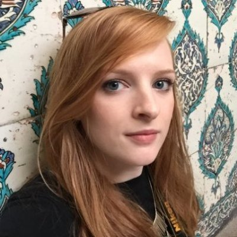

About Me
Not originally from the southeastern United States, my parents have always loved being on the coast and near the water, so our family ended up in New Bern, North Carolina, which is where I was born. Growing up, I spent my time split between eastern North Carolina and Europe, where my father's family lives. My love of far-fling travel I attribute to this early exposure. Growing up, I was involved in 1000 different activities, but my two main loves were playing cello and soccer, both of which I started at the age of 4.
After looking at universities all over the country as well as overseas, I chose to attend the University of North Carolina at Chapel Hill, where I studied Music as well as Speech & Hearing Science. After completing university, I chose to travel abroad for several years, living in Spain and Turkey. After some rather unexpected events, I ended up back in the US, where I stumbled upon my first ever coding crash course at The Iron Yard in Durham, NC.
Here I am today, attending the UNC Coding Bootcamp and excited to dive in and learn all things web development (including how to wipe my computer with a single command!).